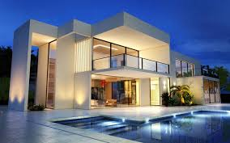
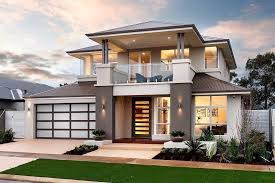
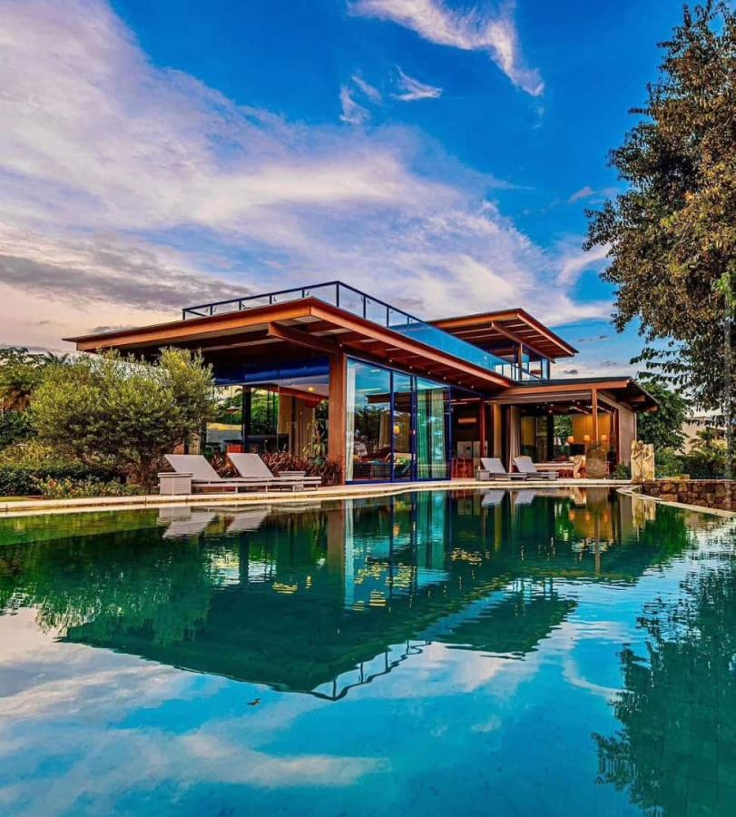

Imóveis para compra:
Na Imobiliária Vanguarda, entendemos que encontrar o lugar perfeito para chamar de lar é essencial. Especializados em compra e aluguel de imóveis residenciais e comerciais,
oferecemos soluções personalizadas que atendem às suas necessidades específicas. Com uma equipe dedicada e experiente, garantimos transações seguras e transparentes,
seja você comprando sua primeira casa ou buscando um novo espaço para sua empresa. Conte conosco para facilitar sua jornada imobiliária de maneira eficiente e profissional.
Casa 1 à venda:

Descubra esta charmosa casa à venda na Imobiliária Vanguarda, onde conforto e estilo se encontram em cada detalhe.
Localizada em um bairro tranquilo, esta residência oferece um ambiente acolhedor e espaçoso, com uma sala de estar iluminada por
luz natural que se abre para um jardim exuberante e uma piscina convidativa. A cozinha gourmet e a sala de jantar proporcionam um espaço
perfeito para refeições e momentos em família. Com três quartos bem distribuídos, incluindo um quarto principal com banheiro privativo, e dois banheiros adicionais,
completam o interior elegante desta casa. O jardim paisagístico, com área de churrasqueira coberta, é o cenário ideal para relaxar e receber amigos. Com uma
piscina aquecida para diversão o ano todo, esta propriedade oferece o equilíbrio perfeito entre conforto e entretenimento ao ar livre.
Casa 2 à Venda:

Descubra esta encantadora casa à venda na Imobiliária Vanguarda, onde conforto e estilo se combinam perfeitamente. Situada em um bairro sereno,
esta residência oferece um ambiente espaçoso e acolhedor, com uma sala de estar ensolarada que se abre para um jardim bem cuidado.
A cozinha gourmet, ideal para entusiastas culinários, e a sala de jantar aconchegante são espaços perfeitos para reuniões familiares. Com três quartos bem distribuídos,
incluindo um quarto principal com banheiro privativo, além de dois banheiros adicionais, esta casa atende todas as necessidades modernas.
O jardim paisagístico, com área de churrasqueira coberta, é um convite para relaxar e receber amigos.
Não perca a chance de fazer desta casa o seu novo lar. Agende uma visita hoje mesmo e explore todas as possibilidades que ela oferece.
Casa 3 à Venda:

Descubra esta encantadora casa à venda na Imobiliária Vanguarda, perfeita para quem busca tranquilidade e qualidade de vida.
Localizada em um bairro familiar, esta residência oferece um ambiente acolhedor e luminoso, com uma sala de estar que se conecta harmoniosamente ao jardim ensolarado
e à piscina convidativa. Com três quartos bem dimensionados, incluindo um quarto principal com banheiro privativo, e dois banheiros adicionais, esta casa é ideal para
famílias que valorizam o conforto e o espaço. O jardim bem cuidado e a área de churrasqueira coberta são ideais para momentos de lazer e convívio. Não perca esta
oportunidade única. Agende sua visita hoje mesmo!
Casa 4 à Venda:
Descubra esta charmosa casa à venda na Imobiliária Vanguarda, onde conforto e estilo se encontram em cada detalhe.
Localizada em um bairro tranquilo, esta residência oferece um ambiente acolhedor e espaçoso, com uma sala de estar iluminada por
luz natural que se abre para um jardim exuberante e uma piscina convidativa. A cozinha gourmet e a sala de jantar proporcionam um espaço
perfeito para refeições e momentos em família. Com três quartos bem distribuídos, incluindo um quarto principal com banheiro privativo, e dois banheiros adicionais,
completam o interior elegante desta casa. O jardim paisagístico, com área de churrasqueira coberta, é o cenário ideal para relaxar e receber amigos. Com uma
piscina aquecida para diversão o ano todo, esta propriedade oferece o equilíbrio perfeito entre conforto e entretenimento ao ar livre.
Casa 5 à Venda:

Explore esta exclusiva casa à venda na Imobiliária Vanguarda, onde conforto e elegância se encontram em cada detalhe. Localizada em um bairro residencial
de prestígio, esta residência oferece um ambiente luxuoso e espaçoso, com uma sala de estar ampla que se abre para um jardim paisagístico e uma piscina deslumbrante.
A cozinha gourmet, equipada com os melhores aparelhos, e a sala de jantar refinada são ideais para receber amigos e familiares. Com três quartos bem distribuídos,
incluindo um quarto principal com banheiro privativo, e dois banheiros adicionais, esta casa é o epítome do luxo e conforto. Não perca a oportunidade de adquirir esta
casa dos sonhos. Marque uma visita hoje mesmo e descubra todas as vantagens que ela oferece!